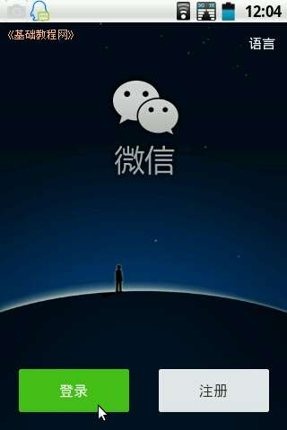
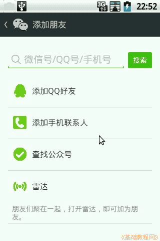
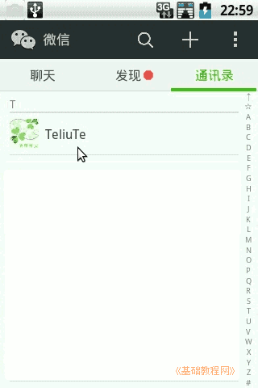

Android 安卓智能手机操作教程
作者：TeliuTe 来源：基础教程网
二十、安装使用微信 返回目录 下一课本节学习安装和使用微信；
1、安装微信
1）到官网上下载微信安装包：http://weixin.qq.com，也可以在应用市场中下载；
2）安装完成后，点“所有程序”里找，第一页没有就找第二页里，点按运行，提示在桌面创建快捷方式；
3）点“登录”，没有微信就点右边的“注册”；

4）在出来的登录框输入手机号，如果是QQ号登录，点下面的“使用其他登录方式”；
5）登录后通讯录提示点“否”，出来“聊天、发现和通讯录”三个标签，再上边是查找、添加和设置按钮；
6）点上边的“加号”添加按钮，选择“添加朋友”，可以添加QQ好友、手机联系人、开启雷达扫描互加；

2、发送消息
1）添加好以后，点按返回，到主界面点“通讯录”，就可以看到添加的好友，点按选“发消息”；

2）发消息界面，下边是是发送栏，左边是发送语音，中间是发文字，右边的加号可以发图片视频文件等；
3）要发送语音消息，点按一下左边的声音按钮，中间出来一个长按钮，“按住说话”，说完松手自动就发出去了，往上滑一下可以取消；
再点语音按钮，切换到文字消息
4）要发送文字消息，点按中间的空格，出来键盘，输入后点右边的“发送”按钮，即可发送出去；
5）要发送图片，点按右边的“加号”按钮，在出来的对话框里选择图片，再选择“相册”，
选择一个相册后，里面照片右上角方框打勾，然后点右上角绿色“发送”按钮；
6）要退出微信，在主界面点右上角长条设置按钮，选择“设置”菜单，选最下面的“退出”，选择关闭微信，还是登出当前账号；
3、设置微信
1）在主界面点右上角长条设置按钮，选择“设置”菜单，可以设置个人资料，消息提醒、通用功能等；
2）点“我的帐号”，可以设置微信号，验证邮件地址，设置独立密码，帐号保护等；
3）点“新消息提醒”，可以设置消息通知声音、震动，消息铃声等；

4）点“通用”，可以设置按回车键发送消息，字体大小，备份和恢复聊天记录，清空消息，开启横屏模式，管理表情，清理微信缓存等；
5）其他“流量统计”、关于微信，可以进去自己看一下；
6）登录网页微信，需要在下载页面右上角点击链接进入，然后在手机上点“发现－扫一扫”，摄像头对着电脑屏幕上的二维码扫描一下即可；
本节学习了安装和使用微信的基础知识，如果你成功地完成了练习，请继续学习下一课内容；
本教程由86团学校TeliuTe制作|著作权所有
基础教程网：http://teliute.org/
美丽的校园……
转载和引用本站内容，请保留作者和本站链接。